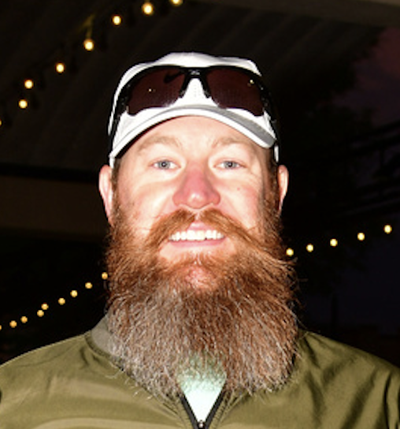

Albert Wille

Skills
Reliable, High Performing, Adaptable, Effective Communication, Career Troubleshooter, Problem solving
Education
Bachelor of Science, Cybersecurity - Bellevue University (2020-2024)
Master of Science, Cybersecurity - Bellevue University (2024-2025)
Work Experience
-
Springdale School District / IT Technician Tier II
August 2023 - Present
- Oversaw Level 2 IT support operations for Arkansas's largest school district, managing Windows services such as DHCP, Active Directory, and Microsoft InTune.
- Performed hardware and network troubleshooting on just over 14,000 devices, including laptops, printers, cameras, chromebooks, and other miscellaneous equipment.
- Managed support requests through the Jitbit ticketing system, specializing in Group Policy management for secure Active Directory administration.
- Contributed to team efficiency by creating comprehensive documentation, aiding knowledge sharing, and facilitating onboarding processes.
-
Wille's Mobile RV Repair LLC / Owner
February 2022 - August 2023
- Utilized strong communication skills to address customer discrepancies and develop practical solutions for mechanical, electrical, and plumbing issues.
- Delivered clear guidance on the proper operation of recreational vehicles to minimize the risk of future breakdowns.
- Managed all financial transactions and logistics to ensure efficient and timely customer service responses.
- Consistently maintained a 5-star Google review rating through prompt and effective communication.
-
United States Marine Corps / Aviation Maintenance controller
July 2007 - July 2022
- Coordinated and monitored aircraft maintenance operations, ensuring compliance with safety standards and FAA regulations.
- Managed maintenance schedules and prioritized repair tasks to minimize aircraft downtime and maximize operational readiness.
- Communicated effectively with maintenance teams, and pilots to resolve technical issues and ensure timely repairs.
- Played a key role in enhancing operational efficiency by streamlining communication between maintenance crews and flight operations.
Other